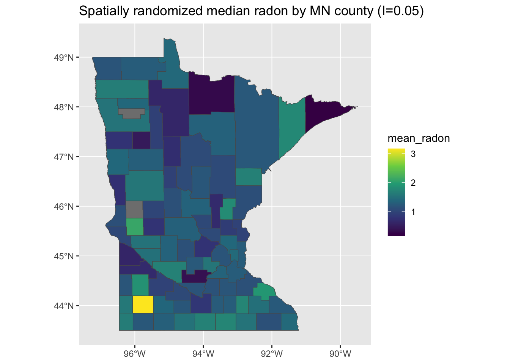
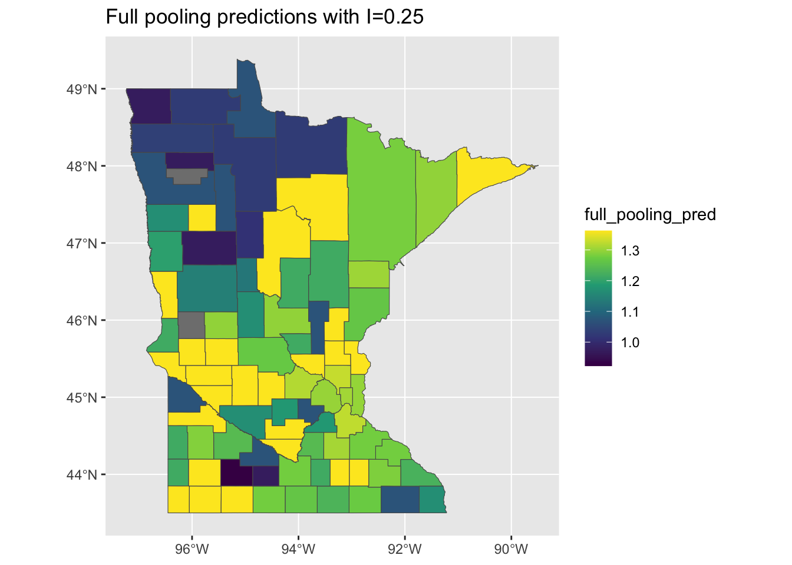
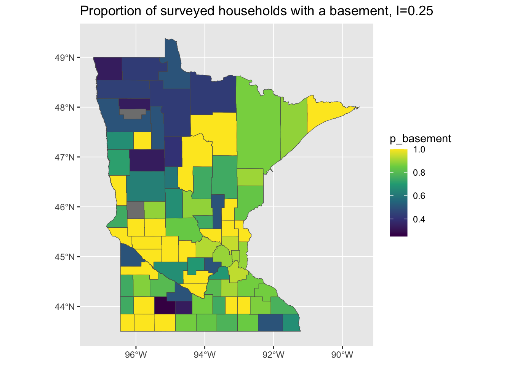

Taking a spatial perspective on the radon data
Introduction
This tutorial is a follow-up to a prior exercise using these data. So if you haven’t already, please go back and take a look at the original multi-level modeling radon example here.
In order to work with these data, we’ll first need to merge the original radon measurements into a shapefile for the state of Minnesota so that we can visualize and analyze spatial patterning of our key exposure of interest (soil uranium) as well as the outcome of interest, i.e. household-level radon, as well as indicators of goodness-of-fit including the model residuals.
Learning Goals
The primary goals of this tutorial are to introduce you to:
- Merging of non-spatial health exposure or outcome data with spatial metadata.
- Calculation of important spatial summary statistics, e.g. Moran’s I, from such data.
- Spatial analysis of residuals from aspatial regression models of spatially-referenced data.
Data Preparation
Before diving into the analysis steps, there are several key things we need to do to be able to easily work with these data:
Download a shapefile for Minnesota
First, we need to get a shapefile for the state of Minnesota in which each polygon represents an individual county. Thankfully, in R, this is made easy using the excellent tidycensus package:
options(tigris_use_cache = TRUE)
minnesota <- get_acs(
state = "MN",
geography = "county",
variables = "B19013_001",
geometry = TRUE,
year = 2020
)Tidycensus gives us the data as an sf dataframe containing a number of fields including population estimates, which we can plot straightforwardly using the plot function supplied by the sf package:
plot(minnesota["estimate"])
Merge the spatial data with the radon data
In its raw form, this spatial dataset isn’t quite ready to merge with the radon data. If we take a peek at the county names in the shapefile, we can see that they don’t quite match the formatting of the ones in the original data:
head(sort(minnesota$NAME))[1] "Aitkin County, Minnesota" "Anoka County, Minnesota"
[3] "Becker County, Minnesota" "Beltrami County, Minnesota"
[5] "Benton County, Minnesota" "Big Stone County, Minnesota"Whereas in the radon data we see:
head(unique(as.character(radon$county)))[1] "AITKIN" "ANOKA" "BECKER" "BELTRAMI" "BENTON" "BIGSTONE"The big differences here are that the shapefile uses: 1) mixed-case county names and 2) includes the name of the state in each label. To make these match the radon dataset, we can use some tools from the stringr package as well as some base R functions:
minnesota <-
minnesota %>% mutate(
## Since all of the original county names have the same substring " County, Minnesota"
## we can use the str_remove function to pull them out of all of them
county = str_remove(NAME, " County, Minnesota") %>%
## Since some of the counties officially have two-word names (e.g. Big Stone)
## which are collapsed in the radon dataset, we will use this function to remove all spaces:
str_replace_all(" ", "") %>%
## A few county names include abbreviations indicated by the presence of a '.' (e.g. St. Louis)
## so we will get rid of that bit of punctuation since it is not in the original data
str_replace_all("\\.", "") %>%
## Finally, convert all the county names to uppercase
toupper()
)Now, the county labels should match:
head(sort(minnesota$county))[1] "AITKIN" "ANOKA" "BECKER" "BELTRAMI" "BENTON" "BIGSTONE"Preparing the radon dataset
We will repeat the steps from the earlier tutorial in order to prepare our data for analysis:
radon <- radon %>% mutate(basement = 1 - floor)
county_uranium <- radon %>%
group_by(county) %>%
summarize(log_uranium = first(log_uranium),
median_radon = median(log_radon))Because the sf dataset returned by tidycensus is a dataframe, we can then easily merge the county-level soil uranium concentrations we derived above into the shapefile. We use the left_join function from dplyr to ensure that all of the counties in the original shapefile are represented in the final dataset, even if a soil uranium measure is unavailable for them in the original data:
minnesota_radon <- left_join(minnesota, county_uranium)We can then plot the log-uranium measures on the map and see that, in fact, they are quite spatially correlated. We can also see that there appear to be two counties which are missing soil uranium data in the radon dataset:
plot(minnesota_radon["log_uranium"])
Measuring Spatial Correlation
To validate our hunch that soil uranium is spatially concentrated in Minnesota, we can calculate the value of Moran’s I for these data using some functions from the spdep package. First, we use the poly2nb function to obtain the neighbors for each polygon, which will be used to calculate Moran’s I.
nb <- poly2nb(minnesota_radon)This function yields an R list in which each entry is a vector with the indices for the neighbors of the i-th county. For example, this prints the neighbors of the first three counties in the dataset:
[[1]]
[1] 12 47
[[2]]
[1] 27
[[3]]
[1] 8 24 46 57 67 76 83 87We then pass this function to the nb2listw function to obtain weights for the relationships between neighbors. Here, we use the simplest option available, “B”, for binary weights equal to 1 if the areas are neighbors and 0 otherwise:
lw <- nb2listw(nb, style="B", zero.policy=TRUE)
print(lw$weights[1:3])[[1]]
[1] 1 1
[[2]]
[1] 1
[[3]]
[1] 1 1 1 1 1 1 1 1Finally, we can pass these weights, along with some additional information including the outcome of interest at each location, the total number of locations, and the sum of all the weights to the moran function. The NAOK=TRUE option used here also allows the function to drop locations where data are missing:
radon_i <- moran(minnesota_radon$log_uranium, lw, length(nb), Szero(lw),NAOK=TRUE)$IWhen we do this, we find that the value of Moran’s I = 0.71, which is close to the maximum value of 1. Since we’ll be returning to the calculation of Moran’s I using our spatial data, lets pack it up into a function:
moranFromSF <- function(x, sfdf, style="B") {
nb <- poly2nb(sfdf)
lw <- nb2listw(nb, style=style, zero.policy=TRUE)
mi <- moran(x, lw, length(nb), Szero(lw), NAOK=TRUE)$I
return(mi)
}
print(moranFromSF(minnesota_radon$log_uranium, minnesota_radon))[1] 0.712615Of course, our key quantity of interest isn’t soil uranium but the concentration of radon at the household level. When we constructed the county_uranium dataset above, we also calculated the median radon concentration in the data for each county. When we plot it, we see something similar to the soil uranium, but perhaps a bit less clear:
plot(minnesota_radon["median_radon"])
Using our function for computing Moran’s I, we can easily go ahead and determine how clustered these data are:
radon_mi <- moranFromSF(minnesota_radon$median_radon, minnesota_radon)Which comes out to 0.25, which is smaller than the value we got for uranium, but still indicates meaningful clustering.
Pause here and take a moment to try to figure out what might account for the difference in this intensity of clustering?
Testing, testing
One way to determine whether the spatial aggregation of the radon measurements is meaningful is to compare it to a counterfactual scenario in which the distribution of radon concentrations is known to be uncorrelated with space. This assumption, known as complete spatial randomness (or CSR), allows us to provide a benchmark against which we determine whether the value of Moran’s I we determined is highly likely to occur by chance alone. Thankfully, it is easy to generate a dataset in which the median radon values are distributed randomly across the map:
## Make a new dataset representing 'random minnesota'
random_minnesota <- minnesota_radon
## Use the sample function to resample median radon values without replacement,
## which yields a vector in which the values of median radon are simply shuffled
## by county
random_minnesota$median_radon <- sample(minnesota_radon$median_radon, nrow(minnesota_radon), replace = FALSE)
## Plot the new randomized data
plot(random_minnesota["median_radon"])
This yields something that looks pretty randomly distributed, and when we calculate Moran’s I, we get a value of -0.04, which is closer to the null value of 0. But this still doesn’t tell us anything. What we can do, though, is to generate a bunch of random minnesotas and calculate moran’s I for each of those and see how our observed data stack up.
csrMorans <- function(x, sfdf, trials = 1000, style="B") {
nb <- poly2nb(sfdf)
lw <- nb2listw(nb, style=style, zero.policy=TRUE)
moran_vals <- rep(0, trials)
for (i in 1:trials) {
random_x <- sample(x, length(x), replace=FALSE)
moran_vals[i] <- moran(random_x, lw, length(nb), Szero(lw),NAOK=TRUE)$I
}
return(moran_vals)
}
csr_dist <- csrMorans(minnesota_radon$log_uranium, minnesota_radon)This yields a distribution with a median of 0, and the empirical cdf function shows us the approximate probability of obtaining a value of Moran’s greater than or equal to our observed value by random chance alone:
moran_dist <- ecdf(csr_dist)
plot(moran_dist)
And we can directly estimate this probability as follows:
real_moran <- moranFromSF(minnesota_radon$median_radon, minnesota_radon)
p_moran <- sum(csr_dist >= real_moran)/length(moran_dist)
print(p_moran)[1] 0From 1000 samples, it appears that none of our random datasets yielded a value of Moran’s I \(\ge\) to the observed value, suggesting that it is unlikely that we would observe this value as a simple function of sampling variability.
Before you move on, take a minute to think about what some of the potential flaws in our CSR-based approach to assessing the meaningfulness or signficance of this result might be.
full_pooling_model <- lm(log_radon ~ basement, data = radon)
display(full_pooling_model)lm(formula = log_radon ~ basement, data = radon)
coef.est coef.se
(Intercept) 0.78 0.06
basement 0.59 0.07
---
n = 919, k = 2
residual sd = 0.79, R-Squared = 0.07radon$full_pooling_resid <- resid(full_pooling_model)
radon$full_pooling_pred <- predict(full_pooling_model)no_pooling_model <- lm(log_radon ~ basement + county, data = radon)
display(no_pooling_model)lm(formula = log_radon ~ basement + county, data = radon)
coef.est coef.se
(Intercept) 0.20 0.37
basement 0.69 0.07
countyANOKA 0.04 0.38
countyBECKER 0.66 0.56
countyBELTRAMI 0.70 0.46
countyBENTON 0.57 0.51
countyBIGSTONE 0.65 0.56
countyBLUEEARTH 1.14 0.41
countyBROWN 1.11 0.51
countyCARLTON 0.16 0.43
countyCARVER 0.68 0.47
countyCASS 0.54 0.49
countyCHIPPEWA 0.87 0.51
countyCHISAGO 0.20 0.47
countyCLAY 1.12 0.41
countyCLEARWATER 0.48 0.51
countyCOOK -0.17 0.63
countyCOTTONWOOD 0.38 0.51
countyCROWWING 0.27 0.42
countyDAKOTA 0.48 0.37
countyDODGE 0.93 0.56
countyDOUGLAS 0.86 0.44
countyFARIBAULT -0.11 0.47
countyFILLMORE 0.53 0.63
countyFREEBORN 1.23 0.44
countyGOODHUE 1.08 0.41
countyHENNEPIN 0.51 0.37
countyHOUSTON 0.90 0.47
countyHUBBARD 0.39 0.49
countyISANTI 0.20 0.56
countyITASCA 0.08 0.42
countyJACKSON 1.15 0.49
countyKANABEC 0.38 0.51
countyKANDIYOHI 1.19 0.51
countyKITTSON 0.73 0.56
countyKOOCHICHING -0.02 0.46
countyLACQUIPARLE 2.06 0.63
countyLAKE -0.40 0.44
countyLAKEOFTHEWOODS 0.99 0.51
countyLESUEUR 0.88 0.49
countyLINCOLN 1.43 0.51
countyLYON 1.09 0.45
countyMAHNOMEN 0.50 0.81
countyMARSHALL 0.75 0.44
countyMARTIN 0.22 0.46
countyMCLEOD 0.43 0.42
countyMEEKER 0.36 0.49
countyMILLELACS 0.08 0.63
countyMORRISON 0.29 0.44
countyMOWER 0.84 0.42
countyMURRAY 1.61 0.81
countyNICOLLET 1.29 0.51
countyNOBLES 1.06 0.56
countyNORMAN 0.40 0.55
countyOLMSTED 0.45 0.39
countyOTTERTAIL 0.75 0.45
countyPENNINGTON 0.30 0.56
countyPINE -0.07 0.47
countyPIPESTONE 0.99 0.51
countyPOLK 0.85 0.51
countyPOPE 0.42 0.63
countyRAMSEY 0.31 0.39
countyREDWOOD 1.11 0.49
countyRENVILLE 0.80 0.55
countyRICE 0.98 0.42
countyROCK 0.45 0.63
countyROSEAU 0.80 0.41
countySCOTT 0.94 0.42
countySHERBURNE 0.24 0.45
countySIBLEY 0.39 0.51
countySTLOUIS 0.04 0.37
countySTEARNS 0.63 0.39
countySTEELE 0.72 0.43
countySTEVENS 0.92 0.63
countySWIFT 0.14 0.51
countyTODD 0.85 0.55
countyTRAVERSE 1.13 0.51
countyWABASHA 0.96 0.46
countyWADENA 0.43 0.49
countyWASECA -0.18 0.51
countyWASHINGTON 0.48 0.38
countyWATONWAN 1.81 0.56
countyWILKIN 1.35 0.81
countyWINONA 0.77 0.42
countyWRIGHT 0.78 0.42
countyYELLOWMEDICINE 0.33 0.63
---
n = 919, k = 86
residual sd = 0.73, R-Squared = 0.29radon$no_pooling_resid <- resid(no_pooling_model)
radon$no_pooling_pred <- predict(no_pooling_model)partial_pool_model <- stan_lmer(log_radon ~ basement + log_uranium + (1 | county), data = radon)
SAMPLING FOR MODEL 'continuous' NOW (CHAIN 1).
Chain 1:
Chain 1: Gradient evaluation took 7.9e-05 seconds
Chain 1: 1000 transitions using 10 leapfrog steps per transition would take 0.79 seconds.
Chain 1: Adjust your expectations accordingly!
Chain 1:
Chain 1:
Chain 1: Iteration: 1 / 2000 [ 0%] (Warmup)
Chain 1: Iteration: 200 / 2000 [ 10%] (Warmup)
Chain 1: Iteration: 400 / 2000 [ 20%] (Warmup)
Chain 1: Iteration: 600 / 2000 [ 30%] (Warmup)
Chain 1: Iteration: 800 / 2000 [ 40%] (Warmup)
Chain 1: Iteration: 1000 / 2000 [ 50%] (Warmup)
Chain 1: Iteration: 1001 / 2000 [ 50%] (Sampling)
Chain 1: Iteration: 1200 / 2000 [ 60%] (Sampling)
Chain 1: Iteration: 1400 / 2000 [ 70%] (Sampling)
Chain 1: Iteration: 1600 / 2000 [ 80%] (Sampling)
Chain 1: Iteration: 1800 / 2000 [ 90%] (Sampling)
Chain 1: Iteration: 2000 / 2000 [100%] (Sampling)
Chain 1:
Chain 1: Elapsed Time: 2.2528 seconds (Warm-up)
Chain 1: 0.635351 seconds (Sampling)
Chain 1: 2.88815 seconds (Total)
Chain 1:
SAMPLING FOR MODEL 'continuous' NOW (CHAIN 2).
Chain 2:
Chain 2: Gradient evaluation took 3.9e-05 seconds
Chain 2: 1000 transitions using 10 leapfrog steps per transition would take 0.39 seconds.
Chain 2: Adjust your expectations accordingly!
Chain 2:
Chain 2:
Chain 2: Iteration: 1 / 2000 [ 0%] (Warmup)
Chain 2: Iteration: 200 / 2000 [ 10%] (Warmup)
Chain 2: Iteration: 400 / 2000 [ 20%] (Warmup)
Chain 2: Iteration: 600 / 2000 [ 30%] (Warmup)
Chain 2: Iteration: 800 / 2000 [ 40%] (Warmup)
Chain 2: Iteration: 1000 / 2000 [ 50%] (Warmup)
Chain 2: Iteration: 1001 / 2000 [ 50%] (Sampling)
Chain 2: Iteration: 1200 / 2000 [ 60%] (Sampling)
Chain 2: Iteration: 1400 / 2000 [ 70%] (Sampling)
Chain 2: Iteration: 1600 / 2000 [ 80%] (Sampling)
Chain 2: Iteration: 1800 / 2000 [ 90%] (Sampling)
Chain 2: Iteration: 2000 / 2000 [100%] (Sampling)
Chain 2:
Chain 2: Elapsed Time: 2.55878 seconds (Warm-up)
Chain 2: 0.711363 seconds (Sampling)
Chain 2: 3.27014 seconds (Total)
Chain 2:
SAMPLING FOR MODEL 'continuous' NOW (CHAIN 3).
Chain 3:
Chain 3: Gradient evaluation took 3.7e-05 seconds
Chain 3: 1000 transitions using 10 leapfrog steps per transition would take 0.37 seconds.
Chain 3: Adjust your expectations accordingly!
Chain 3:
Chain 3:
Chain 3: Iteration: 1 / 2000 [ 0%] (Warmup)
Chain 3: Iteration: 200 / 2000 [ 10%] (Warmup)
Chain 3: Iteration: 400 / 2000 [ 20%] (Warmup)
Chain 3: Iteration: 600 / 2000 [ 30%] (Warmup)
Chain 3: Iteration: 800 / 2000 [ 40%] (Warmup)
Chain 3: Iteration: 1000 / 2000 [ 50%] (Warmup)
Chain 3: Iteration: 1001 / 2000 [ 50%] (Sampling)
Chain 3: Iteration: 1200 / 2000 [ 60%] (Sampling)
Chain 3: Iteration: 1400 / 2000 [ 70%] (Sampling)
Chain 3: Iteration: 1600 / 2000 [ 80%] (Sampling)
Chain 3: Iteration: 1800 / 2000 [ 90%] (Sampling)
Chain 3: Iteration: 2000 / 2000 [100%] (Sampling)
Chain 3:
Chain 3: Elapsed Time: 2.53534 seconds (Warm-up)
Chain 3: 1.16599 seconds (Sampling)
Chain 3: 3.70133 seconds (Total)
Chain 3:
SAMPLING FOR MODEL 'continuous' NOW (CHAIN 4).
Chain 4:
Chain 4: Gradient evaluation took 4.1e-05 seconds
Chain 4: 1000 transitions using 10 leapfrog steps per transition would take 0.41 seconds.
Chain 4: Adjust your expectations accordingly!
Chain 4:
Chain 4:
Chain 4: Iteration: 1 / 2000 [ 0%] (Warmup)
Chain 4: Iteration: 200 / 2000 [ 10%] (Warmup)
Chain 4: Iteration: 400 / 2000 [ 20%] (Warmup)
Chain 4: Iteration: 600 / 2000 [ 30%] (Warmup)
Chain 4: Iteration: 800 / 2000 [ 40%] (Warmup)
Chain 4: Iteration: 1000 / 2000 [ 50%] (Warmup)
Chain 4: Iteration: 1001 / 2000 [ 50%] (Sampling)
Chain 4: Iteration: 1200 / 2000 [ 60%] (Sampling)
Chain 4: Iteration: 1400 / 2000 [ 70%] (Sampling)
Chain 4: Iteration: 1600 / 2000 [ 80%] (Sampling)
Chain 4: Iteration: 1800 / 2000 [ 90%] (Sampling)
Chain 4: Iteration: 2000 / 2000 [100%] (Sampling)
Chain 4:
Chain 4: Elapsed Time: 2.24083 seconds (Warm-up)
Chain 4: 0.755658 seconds (Sampling)
Chain 4: 2.99648 seconds (Total)
Chain 4: radon$partial_pooling_resid <- resid(partial_pool_model)
radon$partial_pooling_pred <- posterior_predict(partial_pool_model) %>% apply(2,median) results_by_county <- radon %>%
group_by(county) %>%
summarize(p_basement = sum(basement)/n(),
full_pooling_resid = mean(full_pooling_resid),
no_pooling_resid = mean(no_pooling_resid),
full_pooling_pred = mean(full_pooling_pred),
no_pooling_pred = mean(no_pooling_pred),
partial_pooling_pred = mean(partial_pooling_pred),
partial_pooling_resid = mean(partial_pooling_resid))
results_by_county <- left_join(minnesota, results_by_county)Full Pooling
This results in residuals that still look pretty spatially clustered:
mi <- round(moranFromSF(results_by_county$full_pooling_resid, results_by_county), 2)
g <- ggplot(results_by_county) +
geom_sf(aes(fill =full_pooling_resid )) +
ggtitle(paste0("Full pooling residuals with I=", mi))
plot(g)
This is unsurprising, since we didn’t include any information that varies at the county level. So, if we look at the predictions of the model, should we should expect to find that they are spatially un-clustered?
This results in residuals that still look pretty spatially clustered:
mi <- round(moranFromSF(results_by_county$full_pooling_pred, results_by_county), 2)
g <- ggplot(results_by_county) +
geom_sf(aes(fill = full_pooling_pred )) +
ggtitle(paste0("Full pooling predictions with I=", mi))
plot(g)
Wait - what? It looks like our model is predicting lower values in the northwest corner of the state relative to the rest of the state. How is this possible, if our model doesn’t include contextual information?
Lets just check and see if our one predictor - the presence or absence of a basement - exhibits any spatial variability?
mi <- round(moranFromSF(results_by_county$p_basement, results_by_county), 2)
g <- ggplot(results_by_county) +
geom_sf(aes(fill = p_basement )) +
ggtitle(paste0("Proportion of surveyed households with a basement, I=", mi))
plot(g)
Whoops…that looks familiar!
Sometimes, it is easy to forget that the input data may be as or more correlated than the outcome data. In this example, the presence or absence of a basement in a house seems to have a spatial pattern and this impacts the spatial patterning of our predictions and model residuals!
So it looks like we are over-predicting risk in some areas where more surveyed households have basements and under-predicting it in other places where fewer households have basements.
No Pooling
Ok, so lets try this again with our no-pooling model which at least includes some info on the counties:
mi <- round(moranFromSF(results_by_county$no_pooling_resid, results_by_county), 2)
g <- ggplot(results_by_county) +
geom_sf(aes(fill =no_pooling_resid )) +
ggtitle(paste0("No pooling residuals with I=", mi))
plot(g)
Well, that’s a bit better, although it does such a good job at explaining away the overall variability in our measurments, we might be concerned that it is overfitting the model through the inclusion of the county level random effects. This is evidenced in the tiny size of the residuals and their minimal variation:
hist(results_by_county$no_pooling_resid, breaks = 20)
Partial Pooling
mi <- round(moranFromSF(results_by_county$partial_pooling_resid, results_by_county), 2)
g <- ggplot(results_by_county) +
geom_sf(aes(fill = partial_pooling_resid )) +
ggtitle(paste0("Partial pooling residuals with I=", mi))
plot(g)
mi <- round(moranFromSF(results_by_county$partial_pooling_pred, results_by_county), 2)
g <- ggplot(results_by_county) +
geom_sf(aes(fill = partial_pooling_pred )) +
ggtitle(paste0("Partial pooling predictions with I=", mi))
plot(g)
Citation
@online{zelner2023,
author = {Jon Zelner},
title = {Taking a Spatial Perspective on the `Radon` Data},
date = {2023-02-28},
url = {https://zelnotes.io/posts/spatial_radon},
langid = {en}
}